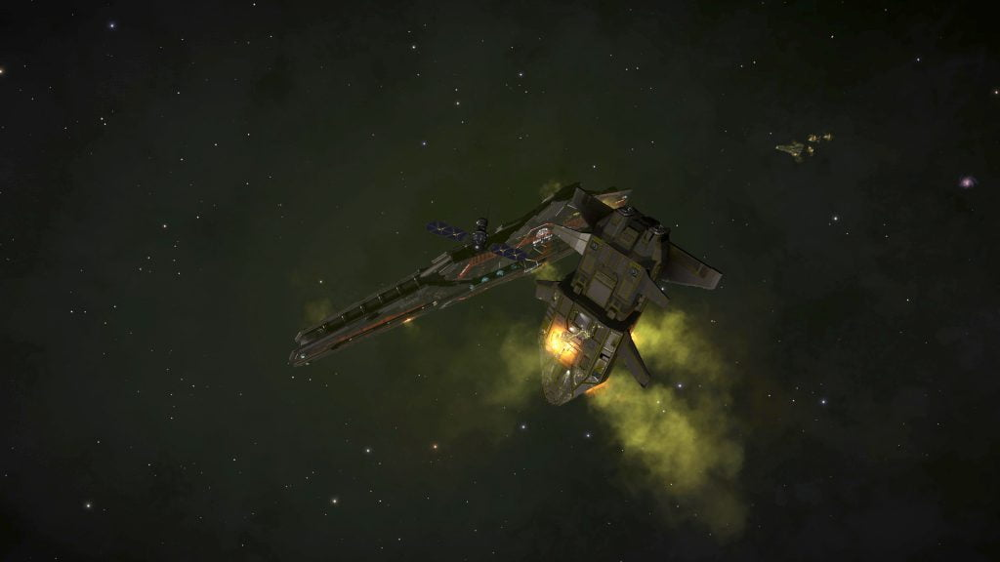
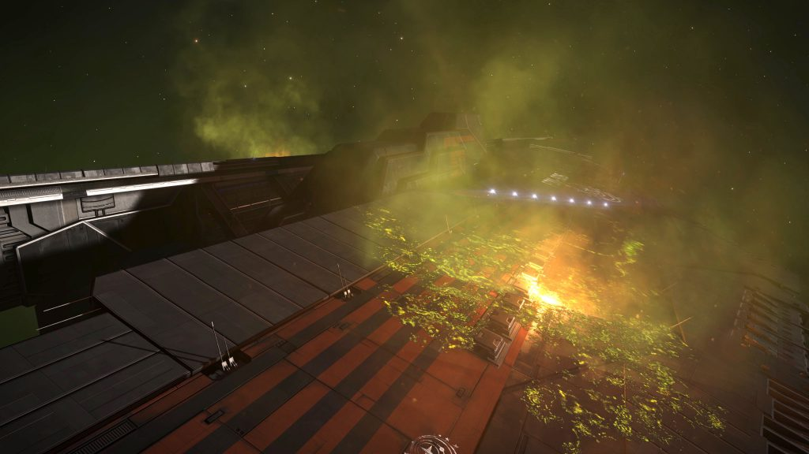
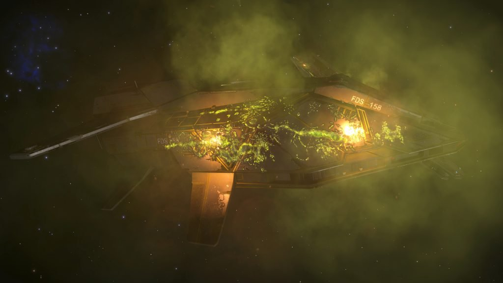

A “Distress Call” signal source can be found in the HIP 17044 system. The Distress Call is approximately 11,024 Ls away from the body 2, on a heading towards the Asterope system.
Both a “Distress Call” and “Unregistered Comms Beacon” signal source will appear in your ship’s navigation panel (Note: may need to use the FSS to see the Distress Call), and either of them leads to the location.
Note: This Unregistered Comms Beacon is no longer present
The source of the distress call is the wreckage of a Federal Navy fleet consisting of two Farragut-class Battlecruisers and their escorts, destroyed by unknown weapons leaving green hull scarring and some kind of green gas throughout the area.

An Unregistered Comms Beacon can be found amongst the wreckage. Known to transmit the following at 30 minutes past every hour:
THARGOID RETURN
(repeated six times)
Note: This Unregistered Comms Beacon is no longer available, as it appears to have been removed.
One of the Farraguts contains a Private Data Beacon which provides an Unknown Ship Signature when scanned.
There is also a sped up Morse transmission from both of the Farraguts, that can be heard at the antenna array of the damaged ships. The transmission repeats approximately every 5 minutes.
To decode this transmission, first view as a spectrogram then slow down the transmission to approximately 10% of it’s original speed. Something that looks like Morse Code should now appear, and be able to be decoded.
When decoded this transmission reads:
UNKNOWN VESSELS DETECTED.
SERVER PURGE FAILED.
SHIP ASSETS LIQUIDATED.
PAYLOAD DESTROYED.
SHIP STATUS LOST.
This message is similar, but not the same, to another Morse transmission found later in Delphi (Pleiades Sector IR-W d1-55).

The location of the distress call was revealed in a video broadcast by CMDR EdLewis on 13 Jun 3303, in which he received the following message as a result of the completion of the previous day’s Community Goal issued by Professor Palin.
FEDERAL SECURITY COMMUNICATION
Commander Lewis, we understand you have been gathering data from the unknown ships on behalf of Professor Ishmael Palin.
Unfortunately, your actions were in violation of a number of Federal laws. The Federation has therefore taken possession of your data, which will be transported to a secure location for further analysis.
The usual punishment for a crime such as yours is severe, but on this occasion we are willing to offer you an alternative to imprisonment. We have lost contact with the vessel transporting the aforementioned data, and we need a resourceful individual to determine what has happened to the ship. If you could assist us in this matter, we would gladly overlook your transgression.
The vessel’s last transmission is below. It should point you in the right direction.
…pulled out…hyperspace…decoy didn’t work. HIP 17044…it’s them…all ships…action stations…2 escorts disabled…all disabled… Fire everything we’ve got…towards…airlocks…data secure…ATSEROPE… Hull breaches, decks five through eight…11000…exactly where…captain lost…beacon launched…hidden…30…
Needless to say, this operation should be kept out to the public eye. Your discretion is appreciated.
After discovering the wreckage, CMDR EdLewis sent the following message to all known pilots:
This is an urgent message from Commander Edward Lewis.
There are forces out there that don’t want you to know the truth, but I have to make this public.
I found a ship in HIP 17044. A Federal cap ship shot to pieces. They were carrying the data the Feds stole from Professor Palin. The crew is dead, but they discovered something important about the Unknown Ships.
There’s beacon in the wreckage broadcasting a message, over and over.
It proves what we suspected. They’re back. And the whole galaxy needs to know.
The Thargoids have returned.
